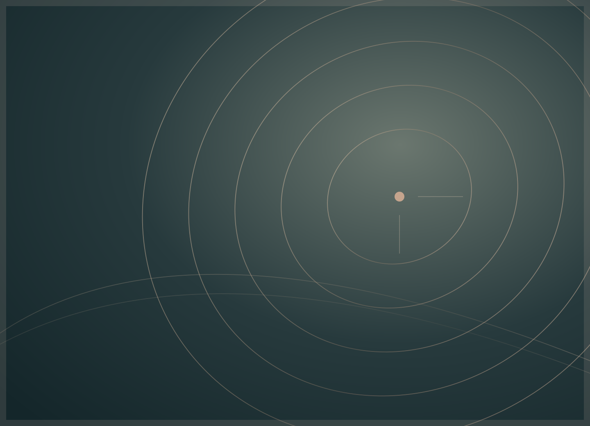

Abdominoplastia
Informações sobre tecidos e contorno abdominal.
Experiência de design fictícia — sem prestação de serviços médicos, profissional habilitado ou agendamento real.

Contexto geral
A abdominoplastia envolve alterações na pele e nos tecidos da região abdominal, conforme a indicação clínica e a técnica considerada.
Possíveis indicações
Pode ser discutida para excesso de pele e situações relacionadas à parede abdominal, após avaliação adequada. Não substitui medidas gerais de saúde.
Avaliação individual
O médico avalia condições de saúde, histórico, anatomia, limitações, cicatrizes possíveis e alternativas.
Riscos e limites
Podem ocorrer sangramento, infecção, acúmulo de líquidos, alterações de sensibilidade, cicatrização desfavorável e complicações tromboembólicas.
Recuperação
O tempo para retomar atividades e as orientações sobre mobilidade e acompanhamento dependem do procedimento e da evolução individual.
Perguntas frequentes
É um procedimento para perder peso?
Não deve ser apresentado como tratamento de emagrecimento.
As cicatrizes desaparecem completamente?
Não. Cicatrizes são parte da cirurgia e evoluem de forma individual.